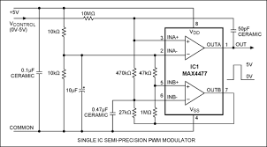
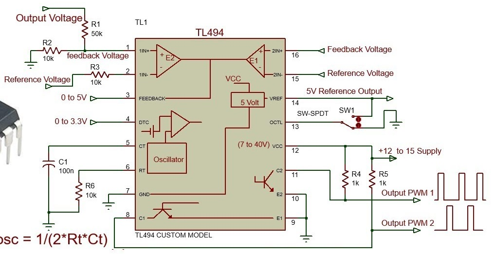
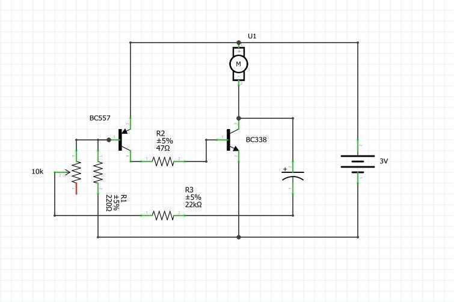

Astabilni izvor PWM-a

Ova vrsta PWM izvora je vrlo jednostavna, ali uz promjenu duty cycle-a mijenjamo i frekvenciju, što je loša strana ovog dizajna. Od PWM izvora očekujemo da uz promjenu duty cycle-a ne mijenjamo frekvenciju i to je najveći problem ovog strujnog kruga. Eliminiranje toga problema kod ove vrste izvora PWM-a iziskuje dodatno zakompliciravanje sheme, a u tom slučaju je jednostavnije koristit ostala rješenja koja eliminiraju taj problem.
Izvor sa OP-AMP
Operacijska pojačala su složene elektroničke komponente koje se koriste za pojednostavljivanje strujnih krugova. Pojačala sama po sebi odrađuju posao generiranja PWM signala, ali sa dodatnim komponentama podešavamo frekvenciju i duty cycle. Prednost ovog sklopa su jednostavnost i moguće mjenjanje DC(duty cycle)-a bez promjene frekvencije. Loša strana je to što je neprecizan i treba izlazno pojačalo u obliku nekog tranzistora, kao i astabilni izvor.
Integrirani krug izvor PWM-a
Integrirani krug je najbolje rješenje jer omogućava precizno upravljanje frekvenvijom i DC-om. Isto tako možemo imati izlazni signal koji će pokazivati namještenu frekvenciju i DC na zaslonu. Zbog svih prednosti, pojavljuje se jedna mana, a ta mana je da je jako kompliciran i skup.
Tranzistor
Najjednostavnije riješenje od svih je ono sa 2 tranzistora i nekoliko komponenti, ali ne možemo kod ovog strujnog kruga fino podešavati DC i frekvenciju, nego kao kod astabila jedno ovisi o drugome. Ovaj dizajn koristimo kod npr. ispitivanja i testiranja drugih strujnih krugova ili za upravljanje motorima jer oni nemaju nikakve posebne zahtjeve. Ova vrsta izvora PWM signala je jako slična kao ona astabilna, samo što ovdj ne moramo koristiti iste tranzistore.